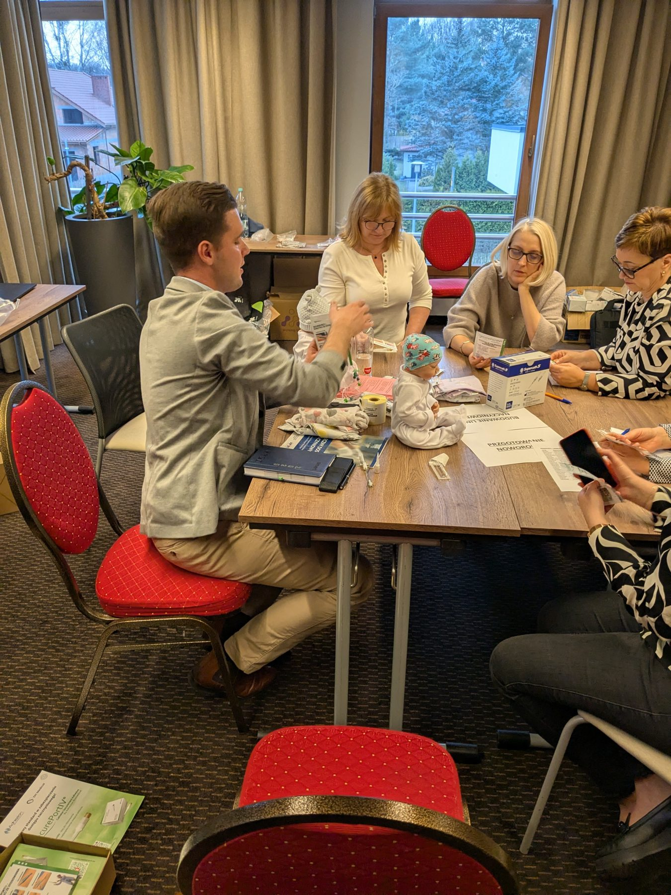

21 marca 2025 roku uczestniczyliśmy w warsztatach dotyczących dostępów PICV w Centrum Zdrowia Dziecka w Warszawie. Podczas wydarzenia zaprezentowaliśmy możliwości wykorzystania kleju SecurePortIV do mocowania cewników.
Wymiana wiedzy i doświadczeń
W prezentacjach wspierali nas eksperci z Holandii: Roland van Rens, członek zespołu NEVAT (Neonatal European Vascular Access Team), oraz Thecla Bolsius, pielęgniarka z wieloletnim doświadczeniem.
Serdecznie dziękujemy mgr Elżbiecie Iłendo za organizację wydarzenia oraz wszystkim uczestnikom za zaangażowanie i inspirujące dyskusje.

Warsztaty dotyczące mocowania cewników PICV — 21 marca 2025 r.